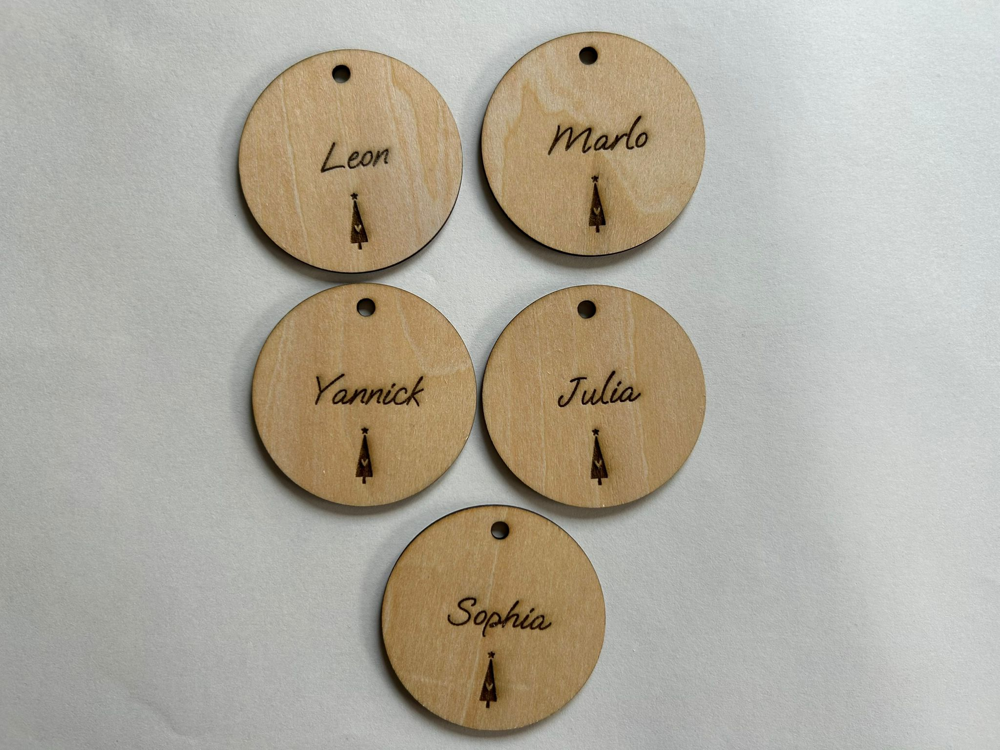
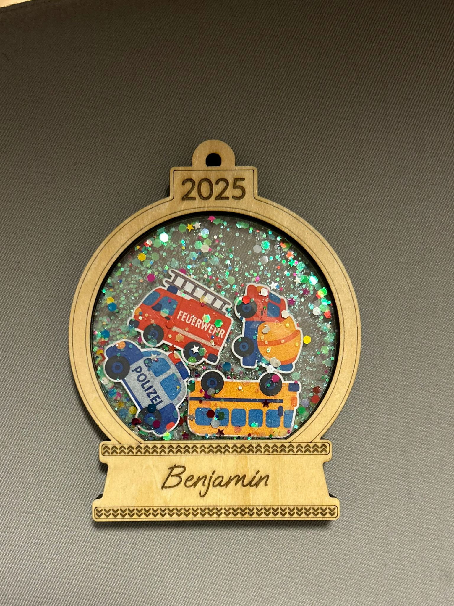
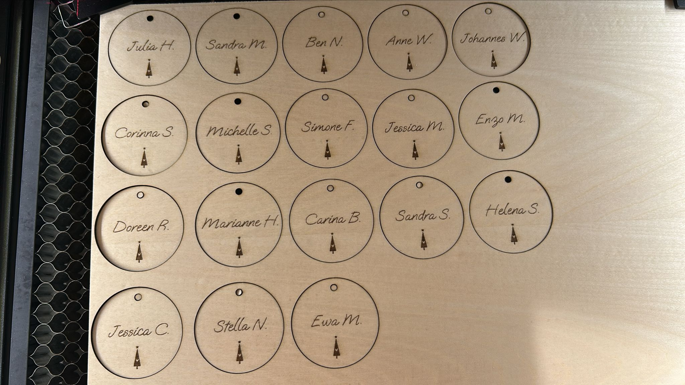
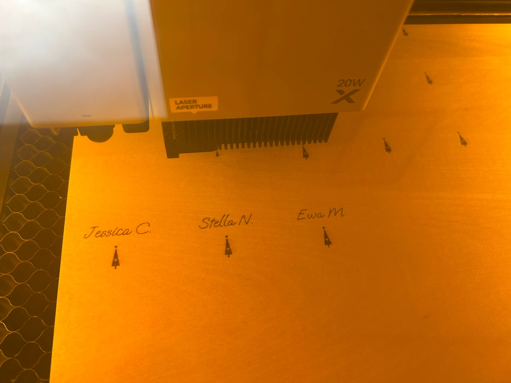

Weihnachten — Anhänger & Shaker Ornamente
Weil auch das Verpacken ein Teil des Geschenks ist.





Das Projekt
Zu Weihnachten soll alles ein bisschen mehr glitzern — auch die Verpackung. Diese personalisierten Geschenkanhänger und Shaker-Ornamente wurden für individuelle Weihnachtsgeschenke gefertigt.
Die Anhänger tragen Namen, Jahreszahlen oder kleine Botschaften — als bleibende Erinnerung über das Fest hinaus.
Was ich gemacht habe
Die Geschenkanhänger wurden aus Holz lasergraviert — mit individuellem Text und weihnachtlichen Motiven. Die Shaker-Ornamente sind befüllt mit kleinen Dekorationselementen und werden jedes Jahr wieder an den Baum gehängt.
Alles handgemacht, alles mit Liebe — genau das Richtige für Menschen, die besondere Geschenke verdienen.
Details
Material: Holz, Acryl · Technik: Lasergravur & Laserschnitt · Anlass: Weihnachten
Du möchtest personalisierte Weihnachtsgeschenke oder Anhänger gestalten?
Ähnliches Projekt anfragen →